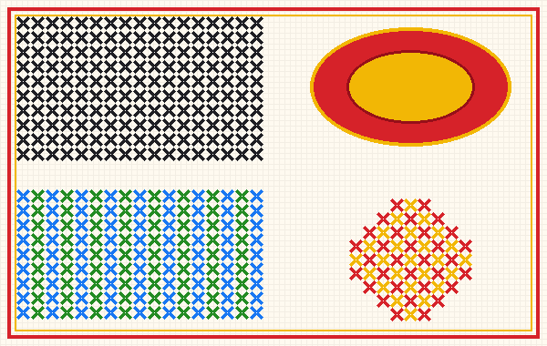

Хрестик (Лічильний хрест)
Найпопулярніша техніка, де стібки перехрещуються під кутом 45°. Дозволяє створювати чіткі геометричні та квіткові композиції за рахунком ниток тканини.

Українські майстрині володіють понад двома сотнями різновидів вишивальних швів. Кожна техніка створює особливу фактуру — від рельєфного «зернового виводу» до невагомого мережива.
Традиційно вишивка мала бути охайною не лише з лицьового боку, а й зі зворотного — без вузликів, що символізувало чистоту помислів.
Найпопулярніша техніка, де стібки перехрещуються під кутом 45°. Дозволяє створювати чіткі геометричні та квіткові композиції за рахунком ниток тканини.
Стібки щільно прилягають один до одного, заповнюючи контур малюнка. Створює ефект живописного полотна з плавними переходами відтінків.
Вишивка виконується зі зворотного боку тканини швом «уперед голку». На лицьовій стороні утворюється рельєфний геометричний візерунок.
Ажурна техніка, при якій із полотна висмикують частину ниток, а решту стягують у витончені стовпчики, створюючи прозоре мереживо.
Вишукана техніка Полтавщини, що поєднує вирізування, лиштвою та зерновий вивід. Візерунок грає за рахунок світлотіні та рельєфу.
Контурний двосторонній шов, яким обрамляють основні елементи орнаменту, надаючи вишивці графічної чіткості та виразності.